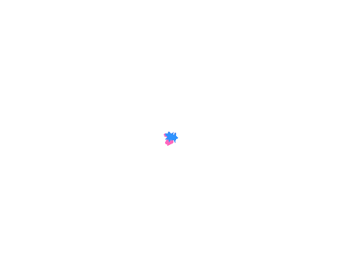

Initializing...
General Options
Program Appearance
Check Update Running Every:
1 Second
1.5 Second
3 Seconds
5 Seconds
10 Seconds
15 Seconds
30 Seconds
45 Seconds
60 Seconds
Auto Clear Log List When Reach:
150 Rows
200 Rows
250 Rows
Program Start on Startup
(When Windows Start)
Enable Alert Sounds on
Update Running Detected, Connected to Internet and No Internet
Disable Automatic Windows Update Permanently
(Not Recommended)
Status Style - Number in Bottom
Status Style - Number in Top
Animation File 1
Animation File 2
Enable Congrats GIF When Automatic Windows Update Stops

Help
Settings